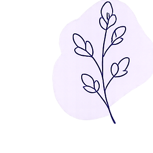
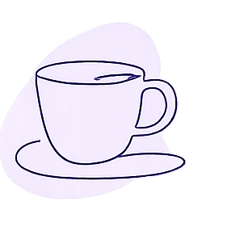
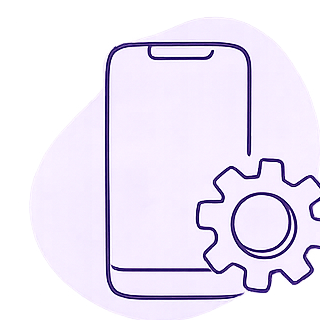
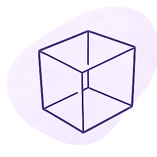
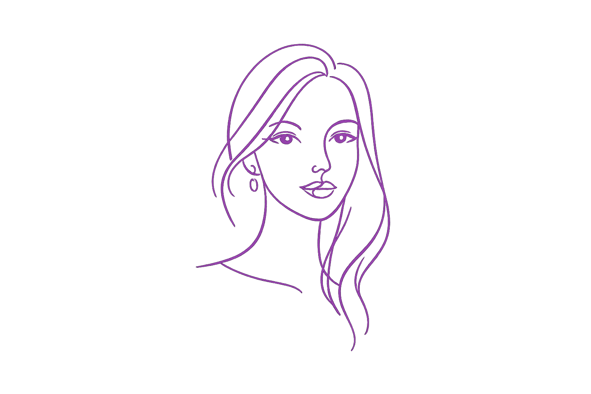

Minimalistisches Webdesign mit Fokus auf Struktur und Klarheit

Analyse moderner Interfaces

Interaktive Konzepte mit fukus auf deeback

Erste Experimente mir räumlichen Objecten
App konzepte für nachhaltiges design

Martina Mustermann studiert total viel interaktive medien and der tha und macht auch voll viel intensiv mit gestaltung digitaler produkte. Ihr schwerpunk liegt auf UX/UI Design, woei sie großen wert auf klare Struktur,Intuitive Bedienbarkeit und eine ruihge vuszelle sprache legt.
Insbesondere interessiert sie sich für minimalistische interfaces, die komplexe inhalte einfach und verständlich vermitteln.